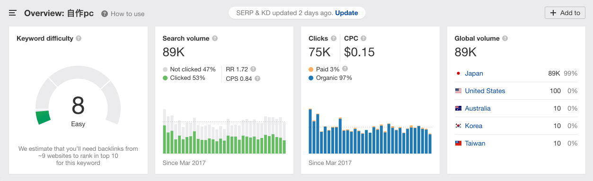

Pasotan 项目复盘
Pasotan.com（最近已更名为 jisaku.com）是我们团队在2019年1月开始的一个尝试性项目。它原来是我们团队的一个成员的兴趣下的个人项目，用于介绍 PC 显示器相关的信息。当我们决定将其从一个个人网站升级为一个真正的产品时，我接手了这个项目。
设计目标
Pasotan 最初是一个关于 PC 显示器介绍的博客站。它仅仅是用来展示作者写的博文，然后用户通过检索引擎找到感兴趣的文章进行阅读。

我们的目标是搭建一套可行的商业模型，重新设计这个网站，帮助它获得更多的流量，最后通过这个网站获取一定的收入。
我的职责
从2019年9月到2020年1月，我接手了改进该网站的任务。作为这个项目的领头人，我负责率领一个很小的团队，包括一名开发和一名内容编辑。我在其中负责 UXUI 设计师的职位，同时兼任产品经理。
我的具体工作内容是：定义 Pasotan 的商业逻辑和功能范围；设计网站的信息结构；负责产品的用户体验和视觉设计；负责网站的流量获取。
设计的挑战
为了重新设计这个网站，我面临着以下挑战：
- 对于 Pasotan 来说，什么是在目前条件下可行的商业模型？
- 要实现这个商业模型，我应该怎么去规划网站的内容和体验？
- 我要怎么帮助这个网站获取低成本的流量？
市场调研
在开始这项工作之前，有个很重要的前提，就是这是一个低投入的项目，人手和资金都非常少，所以我需要找到一个蓝海市场，也就是竞争压力相对较小同时规模足够大的领域。我通过 ahrefs.com 这个工具来辅助我完成市场调研。

一开始我考虑直接将网站从 PC 显示器扩大到游戏 PC 的其他品类，但是经过调查发现“ゲーミングPC”（游戏 PC）这个关键词虽然有非常多的流量，但是它的竞争相当激烈，这意味着我们可能需要构建更多外链和内容来将页面排列到搜索引擎结果页的前方（做广告的成本是无法负担的）。所以我搜寻了其他关键词，然后发现“自作PC”（自己组装PC）这个关键词，有着游戏 PC 接近7成的检索量，但是关键词竞争度相当低，同时付费广告比例也很低，这意味着很容易就能将我们的页面做到排位很高的水准，让潜在的用户得以接触网站内容。


同时，在 youtube 上，“自己组装 PC”这个关键词也比“游戏 PC”有更多的结果，这不仅意味着这个领域的人气度，同时也给今后的流量获取提供了一条可行的渠道。
最后，“自己组装 PC”也与“PC 显示器”高度相关。这正是 Pasotan 当前所具有的内容。这样我们可以通过原有内容的帮助，让我们更快地将网站流量做起来。

在我跟团队成员分享了我的市场调研结果之后，我决定将这个网站转变为一个辅助用户组装 PC 的网站，同时借鉴了其他类型的介绍网站的手法，通过在 PC 部件下贴出购买链接，获取来自其他电商的介绍返利。
信息架构的设计
为了了解在自己组装 PC 的时候，人们都在想一些什么，需要一些什么，我在我同事的帮助下自己动手组装了一台 PC。这真的是一个非常有挑战性的工作，而且也花费了不少钱。但这恰恰印证了我决定做的事情是有价值的。

在这个过程中，我总结了当人们在组装他们的 PC 的时候，两类非常重要的需求：
- 如何选取合适的 PC 组件？
- 参考别人的组装列表和方式？
这两个部分，最后演变为了信息架构中非常重要的两个组成部分。

在这之后，我通过脑图整理了信息架构并与公司中的其他成员进行了讨论和修正。
UXUI 设计
在这里我以如何选取合适的 PC 组件的流程，也就是装机辅助工具作为说明，因为这是这次再设计中最关键的部分。为了让这个部分的体验变得高效以及流畅，我专注于打造一个连贯性的用户流程，同时提供给用户充足的反馈。
在下面的视频中，你可以看到整个流程的简单示意。用户可以在同一个页面中完成 PC 组件的筛选，选择购买网站和数量，检查组件之间的兼容性，追加不存在于数据库中的自定义配件，最后通过补足描述信息，在数分钟之内即可完成一个组装清单并分享至网站。
用户可用性测试
为了验证这个装机工具是否能真正帮助用户完成 PC 组件的挑选，我和开发者合作，用前端框架搭建了一个完全可交互的原型，然后邀请了十个同事来参加用户可用性测试。
结果非常令人振奋，在排除了若干个体验上的问题之后，所有的受试者都给出了正面的评价，然后他们中的4个人用这个工具完成了自己工作所用 PC 配件的选购与组装！

增长黑客相关的设计
在用户可用性得到验证之后，这个项目只剩下最后一个挑战：如何获取低成本用户？
最初，我尝试了寻找日本的装机论坛，在里面关于自己组装 PC 的帖子下进行了回复，介绍了我们的装机工具，并贴出了链接。然而经过两周左右的尝试，我们从这个渠道只得到了很少量的 UV。
我分析了其中的的原因：可能是这些论坛本身的访问量就很低，或者这类型帖子太多，每个帖子需要很长时间才会被人所再次关注。然而过多的回复会被当做垃圾信息被屏蔽，所以我们也不能以量取胜。
于是我换了个角度思考：或许我们能找到一些渠道，既有足够稳定的流量，同时并不阻止甚至欢迎我们贴上自己的链接？我进一步地在网上进行寻找，最后发现关于装机的博客主们有这样的需求：在博客中贴出关于他们装机时使用的部件的链接，通常里面会带上他们自己的电商推荐链接，用来获得引荐收入。而制作这样一个链接比较麻烦，而且需要在不同的网站之间辗转，是一个痛点。
最后我设计了多种类型的插件，可用于展示 PC 部件的价格比较，或者参数信息，在其中博客主们可以粘贴他们自己的引荐码，我们会自动帮助他们生成引荐链接（当然我们也会带上自己的链接和 logo）。


通过这样的手段，我成功地解决了这个挑战。我们通过邮件联络了超过500个博客主，然后其中超过10%的博客主以非常积极的态度回复了邮件，表示愿意使用。现在这些插件和装机工具带来的页面浏览量，占到了整个网站总页面浏览量的30%。同时这些外链成功地帮助了我们原有的内容页面在搜索引擎结果页中排名上升！
结果与反思
跟接手 Pasotan 的3个月前相比，我们没有发布一篇新的文章，但是网站的独立访客数增长了近200%！
其实作为设计师，一开始我没有打算独立领导这个项目，毕竟完成上面描述的挑战，需要大量设计之外的知识。但是由于本来准备加入的产品经理由于其他项目的原因无法加入。我认为如果接手这个项目，不仅可以锻炼我的领导力，同时还能拓展我的知识面，从而更好地跟团队中的各种角色更好地合作。在整个过程中，我经历了包括装机流程体验设计上的偏差，以及第一次增长黑客计划的失败，但同时也收获了大量的经验，包括市场调研、优劣势分析以及可用性测试等。这些经验，对于我之后在其他项目中，更好地参与设计决策过程以及提交更高质量的设计交付，起到了非常重大的影响。